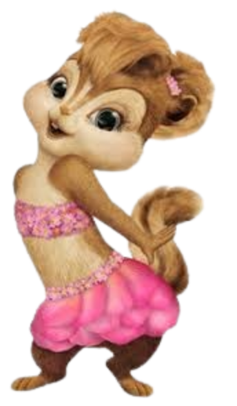

Brittany Miller é a líder confiante, talentosa e vaidosa
das Chipettes em "Alvin e os Esquilos", conhecida por sua voz marcante e olhos cor de avelã. Ela é a contraparte feminina de Alvin, protagonizando uma relação "amor e ódio" que frequentemente evolui para um romance, sendo ambos descritos como competitivos e amigáveis entre si.
